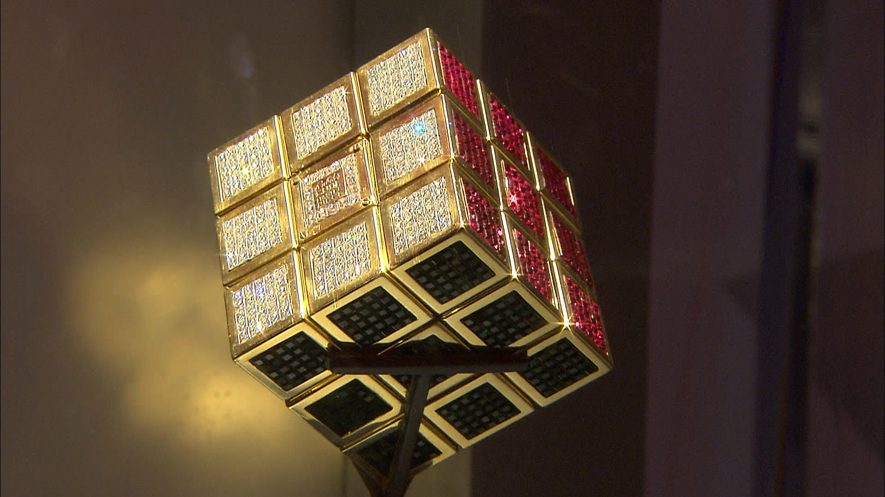

Интересные Факты
1. Эрно Рубик хотел создать рабочую модель для объяснения трехмерной геометрии.

2. У кубика Рубика 43 252 003 274 489 856 000 (43 квинтиллиона 252 квадриллиона 3 триллиона 274 миллиарда 485 миллионов 856 тысяч)возможных конфигураций. С учетом 6 цветных сторон, 21 частей и 54 поверхности, существует более 43 квинтиллионов различных возможных конфигураций.
3. Если бы вы поворачивали кубик Рубика каждую секунду, вам бы потребовалось 1400 триллионов лет, чтобы пройти все конфигурации.
4. Любая цветовая комбинация в классическом кубике Рубика может быть достигнута менее чем за 20 ходов.

5. Эрно Рубику потребовалось более месяца, чтобы найти решение головоломк

6. Самый дорогой экземпляр среди всех существующих был создан ювелиром Фредом Куэлларом в 1989 году. Он изготовлен из золота и инкрустирован бриллиантами, и приблизительная его стоимость равна 1,5 млн долларов.
7. Кубик Рубика неофициально признан лидером среди механических игрушек по количеству проданных экземпляров. За эти годы в мире продано более 350 миллионов моделей, причем, как оригинальных, так и всевозможных аналогов.
8 .До 1977 года эта игрушка была популярна лишь на родине, в Венгрии, пока ее не увидел в ресторане немец Тибор Лаци. Он так увлекся ей, что тут же нашел Эрнё и предложил ему продавать головоломку на Западе.
9. В 1980 и 1981 годах кубическая головоломка становилась лучшей игрушкой года во многих странах, в том числе в Америке, Франции и Великобритании. Кроме того, головоломка получила звание лучшего изобретения года.
10. Первый «Магический Куб» (первоначальное название) был продан в 1975 году в Будапеште.
11. Существуют специальные роботы, которые созданы для сбора кубика Рубика.Самый выдающийся результат составил 0.38 секунд.
12. Самый большой кубик Рубика находится в Ноксвилле, штат Теннесси. Он имеет трехметровые грани и весит 500 кг. А самый маленький создал программистом из России Евгением Григорьевым. Он имеет грани всего 10 мм, но функционирует как обычный!